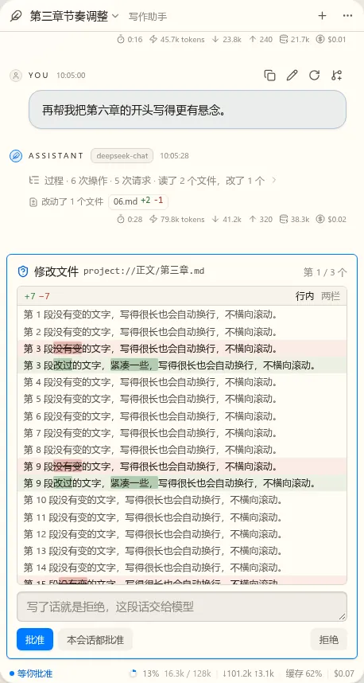
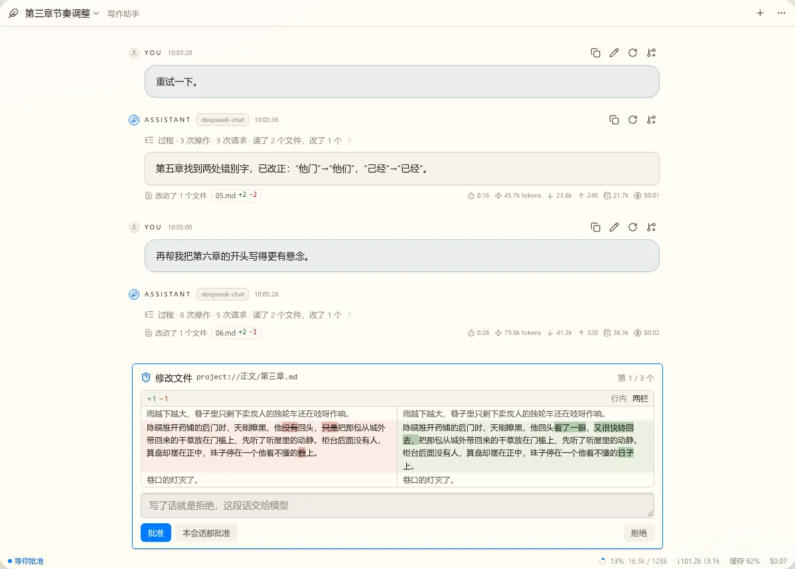

t17 对话界面第一版：静态稿（第 2 轮）
按第 1 轮的备注改的。“提问向导”第 1 轮已通过（ask），这轮只比较它和审批共同的位置（第 6 题）。
待定1. 圆角改多小
你说要改规范。现在默认主题 nbook 的取值确实大，而且对话气泡和输入框是写死的，不走 token。两张图都把这些换成了候选值。定了之后我改主题的 vars.css、把气泡和输入框改成走 token，并写进 design-language.md。这会影响整个应用，所以单独一个提交，改完先看几个主要页面。
| token | 现在（nbook） | A | B |
|---|---|---|---|
控件 --radius-control | 10 | 6 | 4 |
面板与浮层 --radius-panel | 20 | 8 | 6 |
弹出列表 --radius-menu | 10 | 8 | 6 |
对话框 --radius-dialog | 26 | 10 | 8 |
| 对话气泡（写死） | 16、12 | 8 | 6 |
| 输入框（写死） | 10 | 8 | 6 |


推荐：A。已经明显收紧，又保留一点柔和；B 接近直角，和中文正文的长段落放一起偏硬。你也可以写别的数。
待定2. 对齐
我理解的“没对齐”：弹层的边缘没对齐触发它的按钮，里面的小标题也没对齐列表文字。这轮改成：会话列表的左边对齐标题、紧贴顶栏下沿；“当前作品 / 全部”和列表行的文字同一条左边线；模式菜单的左边对齐模式按钮，下沿贴着输入框上沿；“审批模式”和菜单项的图标同一条左边线。如果你说的是别处，写在备注里，最好指一下位置。


待定3. 状态栏
第 1 轮确实漏了：上下文的绝对数、输入和输出、缓存命中都只放在悬停里；连接状态没画，Spec 里有（只在断线时才出现，不占平时的位置）。“正在读取 xxx”去掉了，消息流里本来就有。运行中改成粗一级的阶段和用时：请求中、生成中、执行工具。每个候选左图运行中，右图空闲。
A 文字加分隔
最直白，上下文绝对数常显。没有累计 tokens，460 宽基本放满。
B 图标，和轮末用量同一套
图标和每轮末尾的用量一样，不用重新学，信息最全，上下文放左边。上下文绝对数在悬停里。
C 上下文进度条
顶上一条 2px 进度条，一眼看到还剩多少，文字最少。运行中绝对数让位给阶段。
D 可点的小块
每块能点：上下文点开检查器（第二批），费用点开明细。占的视觉最重。
推荐：B。和轮末同一种写法，整条视图只有一种用量的样子；信息也最多。上下文 90% 起变红（下图是 A 的写法，B 同样）。
待定4. diff 组件
现状：还不是通用组件。现在只是 CodeBlock 按行标红绿，没有行内对比，也没有两栏。中文一段就是一行，只标整行根本看不出改了哪儿，所以这轮改成按字标出（第一张图）。旧应用有 Monaco 做的 DiffWorkbench（含合并），新应用还没有。
我的方案：新建通用的 DiffView，放 nb-ui。用已有的 diff 库算，不用 Monaco：Monaco 要固定高度、不适合嵌在对话里，中文长段落换行和按字标记也是自己画更好控制。支持行内和两栏，窄时只有行内，够宽（约 700）才能切两栏。审批、轮末改动、历史（t13）都用它。
冲突解决能不能用同一个组件：能，但分两层。算差异的核心和每块的显示共用；每块可以多一排动作（采纳、保留、还原），这就够“按块选择”，t13 的收件箱和编辑器的磁盘冲突都能用。真要在结果上自由改字时，再嵌编辑器。t17 只做查看，动作的位置留出来。





待定5. 命令审批
第 1 轮用 nb-form 的展示态，太像表单。这轮标题直接问“允许运行这条命令？”，命令是等宽代码块，工作目录和超时缩成一行小字。别的工具没有专门预览时仍用 nb-form 的展示态。

待定6. 审批和提问：同一层还是浮动
你问的这个：第 1 轮的稿子是同一层，向导占高度，消息流变矮、可以继续滚。两种的差别：

推荐：A。
待定7. 横幅
第 1 轮用了 nb-ui 的 Banner。它的设计就是容器顶部的一节，所以是直角、满宽，放这里不合适。这轮换成对话专用的提示条，和输入框对齐。


推荐：A，有事要处理时看得到。没有动作、只是告知的，比如费用告警，也用 A 的样子。